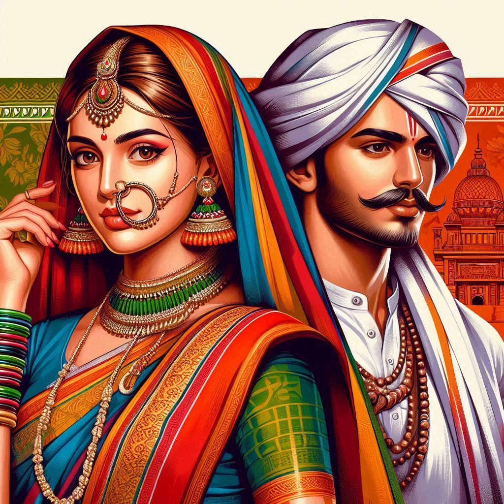
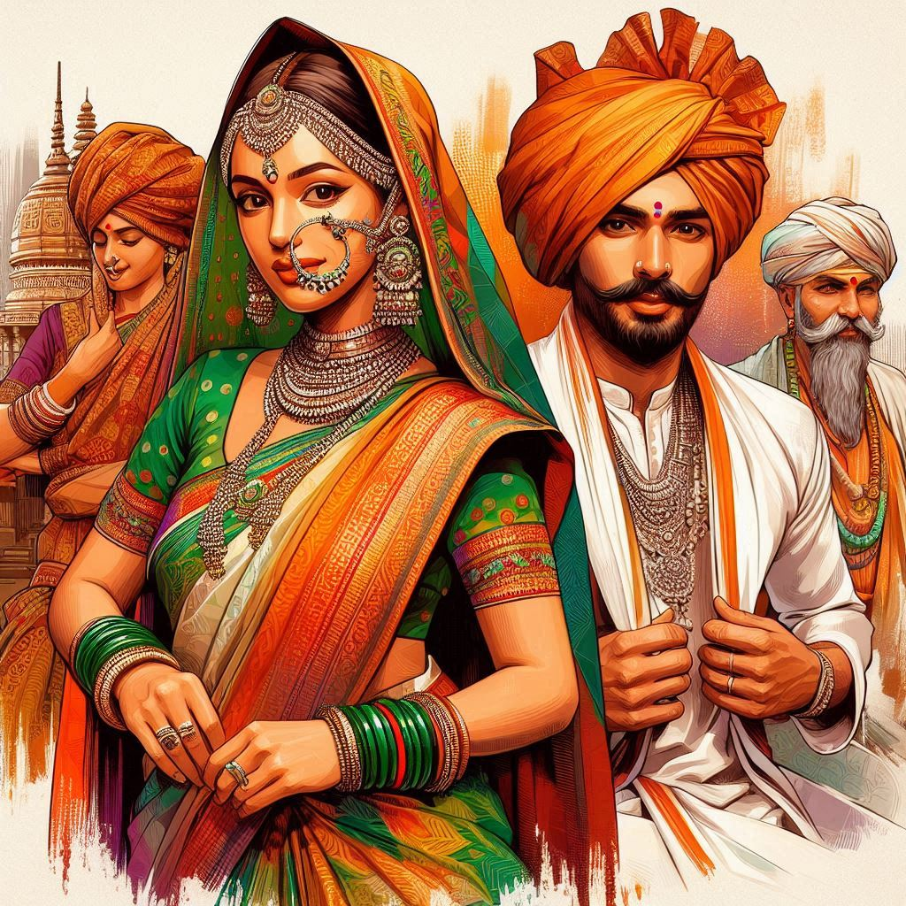

Traditional Dress of Maharashtra
Maharashtra's traditional attire reflects the state's rich heritage, blending comfort, culture, and elegance. The clothing varies across different regions and communities, reflecting local customs, traditions, and history. Here’s a look at the primary traditional dress for men and women in Maharashtra:
1. Traditional Dress for Women
- Nauvari Saree (Nine-Yard Saree): The most iconic attire for women in Maharashtra is the Nauvari saree, a nine-yard-long saree worn without a petticoat, allowing it to be draped in a dhoti-style manner. This saree is practical for daily chores and was traditionally worn by female warriors, providing ease of movement. The drape is unique, with one end covering the shoulder (pallu) and pleats often tucked at the back, resembling a trouser-like fit.
- Color and Fabrics: Women often prefer bright colors like green, red, and gold for special occasions, weddings, and festivals. Fabrics can range from cotton for daily wear to silk for special occasions.
- Jewelry: Traditional Maharashtrian jewelry includes the famous nath (nose ring), mangalsutra (marriage necklace), bangles, and kamarpatta (waist belt). Pearl and gold jewelry often have intricate designs.
- Accessories: The hair is commonly adorned with gajras (flower garlands), and women may also wear bindi and kohl for their eyes.
2. Traditional Dress for Men
- Dhoti and Kurta: The traditional outfit for men is the dhoti, a long rectangular piece of cloth tied around the waist, paired with a kurta or a shirt. The dhoti can be wrapped in different styles, based on regional preferences and occasion.
- Pheta (Turban): The pheta is a characteristic headgear that symbolizes honor and pride. It is usually a brightly colored or saffron turban and is tied in various styles for ceremonies, festivals, or public gatherings. The pagadi is a simpler version of this headgear.
- Bandhgalas and Waistcoats: Men sometimes wear jackets or waistcoats over their kurtas, especially during functions.
- Footwear: Traditional leather sandals called Kolhapuri chappals are popular for men and women, known for their sturdy build and aesthetic appeal.


3. Modern Variations and Cultural Wear
- Sarees and Salwar Kameez: Today, many women in Maharashtra also wear six-yard sarees and salwar kameez as daily or festive wear.
- Sherwani and Kurta Pajama: Men may opt for sherwani or kurta-pajama sets for weddings and special occasions. These are often made of silk or heavily embroidered fabrics.
4. Cultural Significance
Traditional attire in Maharashtra is often worn during festivals such as Ganesh Chaturthi, Diwali, Gudi Padwa, and weddings. It symbolizes respect for culture, and wearing these clothes during special occasions showcases pride in the state's heritage.
5. Tribal Attire
Maharashtra is also home to many tribal communities, each with distinct dress codes. The Warli and Bhil tribes, for instance, have their unique styles of clothing and ornamentation, usually with handwoven or naturally dyed fabrics and accessories.
Conclusion
In sum, Maharashtrian traditional dress beautifully reflects the state's rich legacy, combining grace, tradition, and a practical approach to daily life.